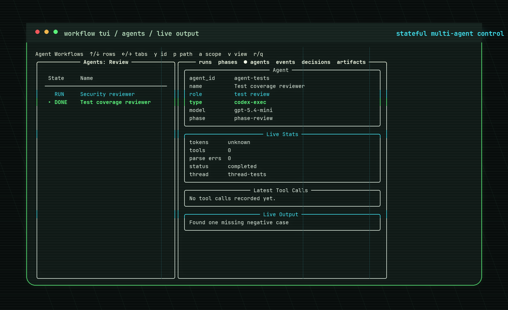

Native subagents
Fast sidecar research, review, and synthesis inside the current Codex turn.

stateful orchestration for coding agents
Coordinate parallel coding runs without losing the plot: phases, agents, decisions, artifacts, live output, runner telemetry, and a TUI that keeps the swarm legible.
workflow apply workflows/review.workflow.json --runner ccc --ccc-runner @mm
Native subagents are great until the work fans out, logs pile up, and the lead session needs to know what is actually happening. Codex Workflow adds a state contract and terminal UI around that motion, then lets direct Codex, OpenCode, and ccc-backed workers plug into the same board.
Runs, phases, agents, events, decisions, and artifacts stay navigable while worker output streams in. The TUI keeps selection stable as the state file changes underneath it.
Fast sidecar research, review, and synthesis inside the current Codex turn.
Independent `codex exec --json` workers with durable JSONL transcripts.
Codex, OpenCode, Kimi, MiniMax, and presets like `@mm` through one provider interface.
`--max-agents` and `--startup-delay` keep launches controlled instead of stampeding.
Every workflow writes a stable `run.json` snapshot under the workflow system state directory. Tools can watch it, archive it, render it, or build higher-level automation without scraping terminal output.
{
"schema_version": 1,
"run_id": "wf-20260611T070952Z",
"title": "Review lanes",
"status": "running",
"paths": { "run_json": ".../run.json", "logs_dir": ".../logs" },
"phases": [
{ "phase_id": "phase-review", "status": "running", "agent_ids": ["agent-review"] }
],
"agents": [
{ "agent_id": "agent-review", "phase_id": "phase-review", "agent_type": "ccc-opencode", "status": "running", "jsonl_path": ".../logs/review.jsonl", "output_path": ".../artifacts/review.md" }
],
"events": [{ "event_id": "evt-123", "kind": "agent", "operation": "updated", "agent_id": "agent-review" }],
"artifacts": [{ "artifact_id": "art-review-output", "kind": "worker-output", "path": ".../artifacts/review.md" }],
"checks": [{ "check_id": "chk-tests", "kind": "verification", "status": "passed", "command": "python3 tests/test_workflow.py" }]
}